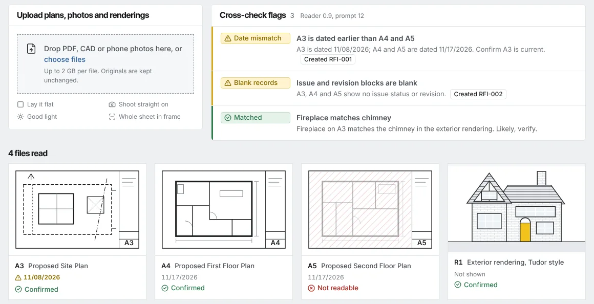

Etapa 1
Planear: meter la casa al sistema bien.
Empiece con un juego de planos, un escaneo con el teléfono o un lote vacío.
- Lector de planos con IA. Lee cotas, cuartos y tablas, compara fechas y revisiones entre hojas, y un estimador verifica.
- Planos de planta con cotas y un modelo 3D hecho a partir de ellos.
- Hojas de construcción A, M, P, E y S, con cuadro de rótulo y tablas.
